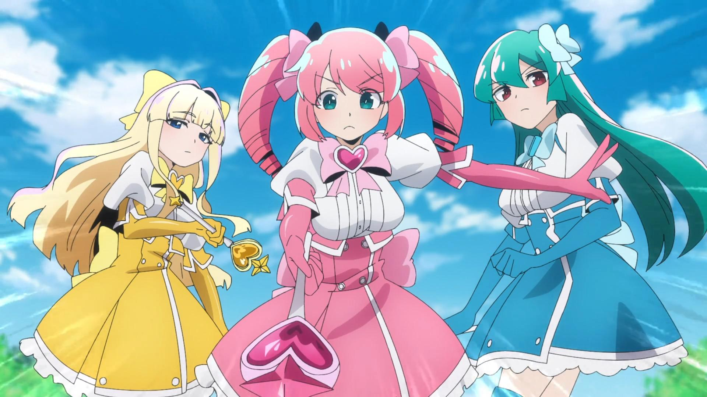
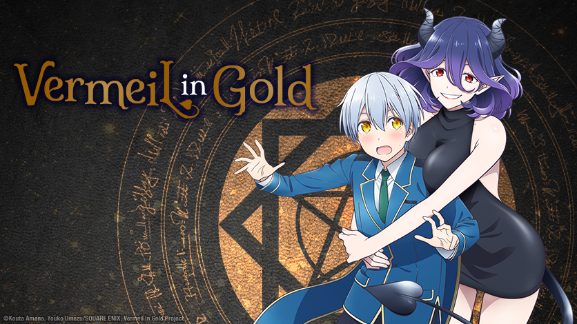
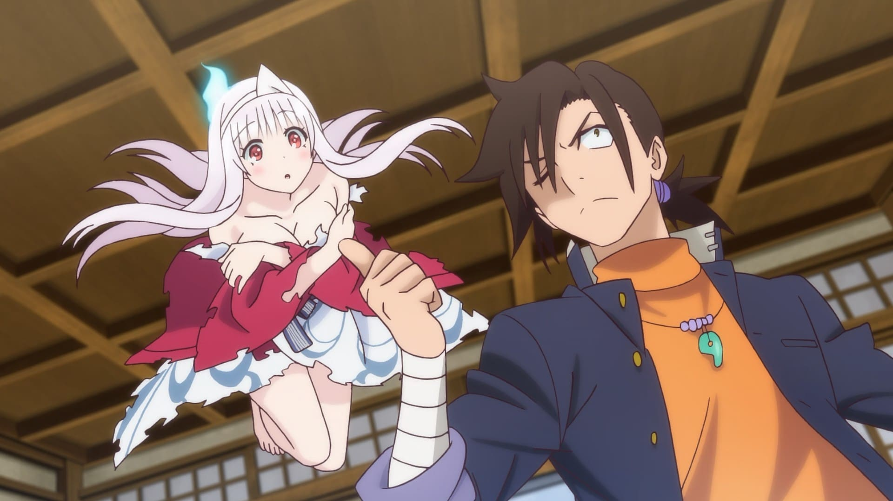
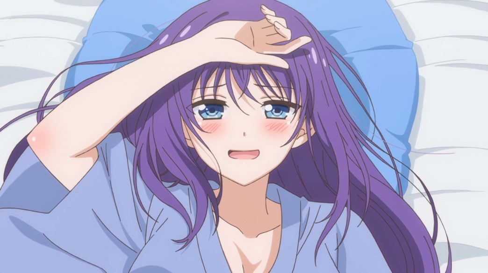
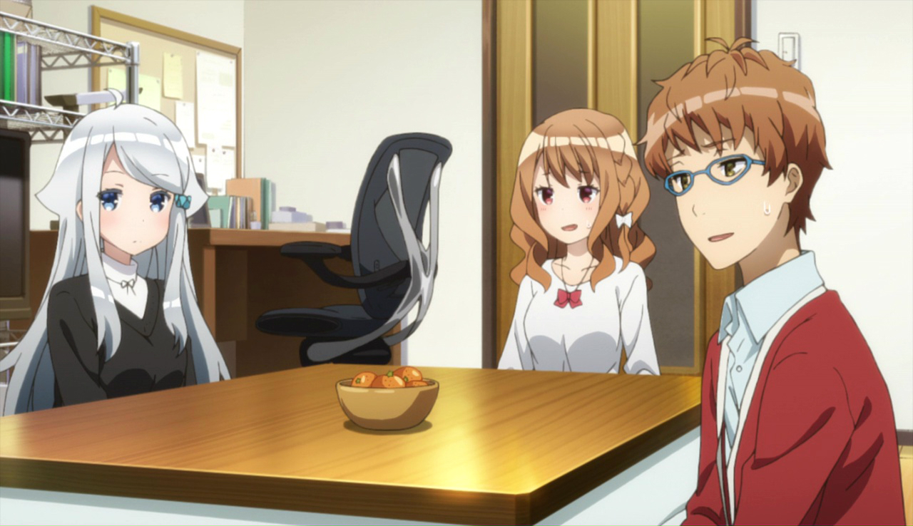
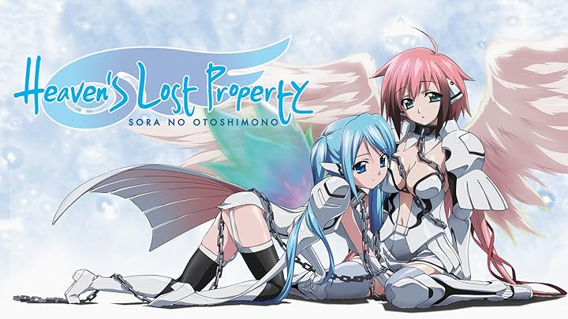

SMASH Senpai
Top 10 Ecchi Romance Anime Where the Relationship Actually Progresses
Not all ecchi romance anime are just about fanservice. Some of them actually tell stories where relationships grow, emotions deepen, and characters move beyond endless teasing.
These anime focus on real romantic progression — awkward first steps, emotional tension, jealousy, intimacy, and bonds that slowly turn into something meaningful.
While ecchi elements add spice and humor, the heart of these stories lies in connection, vulnerability, and characters learning how to deal with their feelings.
From messy love triangles to unexpected living arrangements and emotionally complicated relationships, these anime prove that romance and ecchi can coexist without feeling empty.
These are the Top 10 Ecchi Romance Anime where the relationship actually progresses — not just teasing, but real development that keeps viewers invested until the very end.
Sponsored
#1 Domestic Girlfriend

Domestic Girlfriend is one of the most infamous romance anime ever made — and for good reason. It throws viewers into a messy, emotionally charged relationship that refuses to play it safe. Natsuo Fujii finds himself romantically entangled with two sisters, both of whom become part of his life in the most uncomfortable way possible.
Unlike typical ecchi romance anime, this series doesn’t rely solely on fanservice. It focuses heavily on emotional consequences. Every decision hurts someone. Every moment of intimacy carries guilt, longing, and emotional weight. The romance progresses, but never without cost.
What makes Domestic Girlfriend stand out is its brutal honesty. Characters make selfish choices. Feelings get tangled. Love becomes confusing rather than comforting. Instead of idealized romance, the anime explores desire, regret, and emotional dependence.
The relationship development feels real because it’s flawed. Arguments don’t magically resolve. Characters struggle to move on. The emotional tension keeps escalating, making every confession, breakup, and reunion hit harder.
Domestic Girlfriend proves that ecchi romance can be intense, uncomfortable, and deeply emotional. It’s not just about attraction — it’s about the chaos that comes when love refuses to stay simple.
- Episode count: 12
- Genre: Romance, Drama, Ecchi
- Known for: Controversial relationships, emotional tension
- Core theme: Desire vs emotional responsibility

play anime smash or pass here (not sponsored)
SMASH SENPAI – Smash or Pass#2 To Love Ru Darkness

To Love Ru Darkness takes everything the original To Love Ru series was known for and pushes it further — darker themes, stronger emotions, and more serious romantic development. While still packed with outrageous ecchi moments, Darkness finally starts addressing the emotional side of its relationships.
Rito Yuuki is no longer just stuck in endless misunderstandings. His relationships, especially with Yami and Mikan, gain emotional depth. Characters begin confronting their feelings instead of running from them, giving the romance real weight.
What makes Darkness stand out is its balance. It embraces fanservice unapologetically, yet pairs it with moments of vulnerability. Characters who were once comedic tropes are given emotional backstories and genuine romantic struggles.
The intimacy feels more intentional. Relationships evolve. Boundaries blur. Emotional attachment becomes clear, making the ecchi moments feel connected to the characters rather than random.
To Love Ru Darkness is proof that long-running ecchi series can mature over time. Beneath the chaos and skin, there’s real romantic progression that keeps viewers invested.
- Episode count: 24+
- Genre: Ecchi, Romance, Sci-Fi, Comedy
- Known for: Extreme fanservice with emotional depth
- Core theme: Desire mixed with emotional growth
Sponsored
#3 Gushing over Magical Girls
Gushing over Magical Girls is not your typical magical girl anime — and it makes that clear immediately. What starts as admiration quickly twists into obsession, domination, and emotionally charged power dynamics. This series leans heavily into shock value, but beneath it lies surprising character development.
The story follows Utena, a girl who idolizes magical girls but ends up becoming something darker. Her interactions with the magical girls evolve beyond simple conflict, turning into a strange mix of admiration, desire, and emotional fixation.
What makes this anime stand out is how it treats relationships. Power struggles replace traditional romance, yet emotional bonds still form. Characters influence each other, change because of each other, and develop complex attachments that go far beyond surface-level ecchi.
The intimacy is uncomfortable by design. It challenges viewers, blurring the line between affection and control. Despite its extreme presentation, the character dynamics evolve consistently, giving the series a sense of progression.
Gushing over Magical Girls isn’t for everyone, but for those who can handle its tone, it offers a uniquely twisted take on ecchi romance — one where relationships transform in unsettling yet memorable ways.
- Episode count: 13
- Genre: Ecchi, Dark Fantasy, Romance
- Known for: Controversial themes, intense power dynamics
- Core theme: Obsession and emotional control
#4 Vermeil in Gold
Vermeil in Gold blends ecchi romance with fantasy and magic academy tropes, creating a story that’s far more emotional than it initially appears. Alto Goldfield is a struggling magic student who accidentally summons Vermeil, a powerful demon with a dangerously seductive presence.
From the start, their relationship is intimate by necessity. Vermeil feeds on magical energy through physical closeness, forcing Alto into situations that quickly blur the line between embarrassment and emotional attachment. Unlike many ecchi setups, this intimacy directly affects the plot.
What makes Vermeil in Gold stand out is how quickly feelings develop. Vermeil isn’t just teasing — she becomes protective, emotionally invested, and surprisingly vulnerable. Alto, despite his awkwardness, grows more confident through their bond.
The anime balances fanservice with genuine emotional moments. Jealousy, fear of abandonment, and emotional reliance all play major roles. The romance progresses naturally as both characters depend on each other not just for power, but for emotional stability.
Vermeil in Gold proves that ecchi romance can still deliver meaningful relationship growth. Beneath the seductive visuals lies a story about trust, companionship, and choosing each other despite overwhelming odds.
- Episode count: 12
- Genre: Ecchi, Fantasy, Romance
- Known for: Demon girl intimacy tied to plot
- Core theme: Emotional reliance and mutual growth
Sponsored
#5 Yuuna and the Haunted Hot Springs
Yuuna and the Haunted Hot Springs is a classic supernatural ecchi romance that fully embraces its genre. Kogarashi Fuyuzora moves into a haunted inn only to discover Yuuna, a kind-hearted ghost bound to the hot springs by unfinished business.
While the series delivers a steady stream of fanservice, the relationship between Yuuna and Kogarashi slowly becomes its emotional core. Yuuna isn’t just a ghost for gags — she has regrets, unresolved feelings, and a deep desire to move on.
Kogarashi’s role goes beyond accidental pervert moments. He actively tries to help Yuuna understand her past and find peace. Their bond strengthens through trust, kindness, and shared vulnerability.
Unlike many ecchi rom-coms, Yuuna’s affection feels sincere. She grows emotionally attached, jealous, and protective. The romance progresses steadily, even as supernatural chaos and rival love interests appear.
Yuuna and the Haunted Hot Springs succeeds because it gives heart to its fanservice. Beneath the comedy and chaos is a genuine romantic connection built on understanding, comfort, and emotional healing.
- Episode count: 12 + OVAs
- Genre: Ecchi, Romance, Supernatural
- Known for: Ghost girl romance and bathhouse chaos
- Core theme: Helping someone move on through love
#6 Yamada's First Time: B Gata H Kei

B Gata H Kei approaches ecchi romance from a refreshingly awkward perspective. Yamada is obsessed with the idea of losing her virginity and sets her sights on the seemingly average Kosuda, believing he’ll be easy to seduce.
What follows is a series of hilariously uncomfortable attempts that constantly backfire. Despite Yamada’s bold fantasies, she is painfully inexperienced. Kosuda, meanwhile, turns out to be kind, respectful, and far more emotionally mature than expected.
The brilliance of B Gata H Kei lies in its honesty. Beneath the crude humor is a story about insecurity, pressure, and fear of intimacy. Yamada’s bravado masks anxiety, while Kosuda’s patience creates emotional safety.
Unlike many ecchi anime, the romance actually progresses in a realistic way. Emotional closeness comes first. Physical intimacy is treated as something meaningful, not just a joke or trophy.
B Gata H Kei stands out as an ecchi romance that respects emotional pacing. It’s funny, awkward, and surprisingly sweet — proving that growth often begins with honesty and vulnerability.
- Episode count: 12
- Genre: Ecchi, Comedy, Romance
- Known for: Awkward realism and honest humor
- Core theme: Insecurity and emotional readiness
Sponsored
#7 Mysterious Girlfriend X

Mysterious Girlfriend X is one of the most unconventional romance anime ever made. At first glance, its premise sounds strange — almost unsettling. But beneath its odd surface lies an intensely intimate and emotionally sincere love story.
Akira Tsubaki becomes romantically involved with Mikoto Urabe, a quiet, emotionally distant girl with unusual habits. Their relationship is built around a bizarre form of connection that functions as emotional synchronization, allowing them to understand each other on a deeper level.
Despite the ecchi undertones, the series treats intimacy with respect. Physical closeness represents trust. Boundaries are established early, and both characters take them seriously. This makes their relationship feel oddly wholesome despite the weirdness.
What makes the romance progress is emotional honesty. Urabe struggles to express herself verbally, while Tsubaki learns patience and restraint. Their bond grows quietly, without dramatic confessions or exaggerated reactions.
Mysterious Girlfriend X is not for everyone — but for viewers willing to embrace its uniqueness, it delivers one of the most intimate and emotionally authentic romances in ecchi anime.
- Episode count: 13
- Genre: Ecchi, Romance, Psychological
- Known for: Extremely unconventional intimacy
- Core theme: Trust and emotional synchronization
#8 Ao-chan Can’t Study!
Ao-chan Can’t Study! is a fast-paced ecchi rom-com centered around misunderstanding, insecurity, and emotional denial. Ao Horie is a top student determined to avoid romance at all costs due to her father’s embarrassing past.
Her plans are immediately ruined when Kijima, a kind and straightforward classmate, confesses his feelings. Instead of rejecting him outright, Ao spirals into paranoid fantasies and internal panic.
The humor comes from contrast. Ao’s mind is constantly racing with exaggerated thoughts, while Kijima remains genuinely sincere. Unlike many ecchi protagonists, he isn’t pushy or perverted — he simply likes her.
What elevates the series is its emotional progression. Ao slowly confronts her fear of intimacy. As misunderstandings clear, her walls begin to crack, allowing genuine affection to grow.
Short episodes keep the pacing tight, but the romance still progresses naturally. Ao-chan Can’t Study! proves that even chaotic ecchi comedy can deliver real emotional payoff.
- Episode count: 12 (short episodes)
- Genre: Ecchi, Comedy, Romance
- Known for: Rapid-fire humor and tsundere chaos
- Core theme: Fear of intimacy and emotional growth
#9 A Sister’s All You Need
A Sister’s All You Need disguises itself as outrageous ecchi comedy, but quickly reveals itself as a surprisingly mature romance about adulthood, ambition, and emotional insecurity.
Ichiro Hashima is a light novel author obsessed with a specific trope, surrounded by equally dysfunctional friends. Beneath the jokes and shock humor lies a grounded portrayal of creative struggle and romantic hesitation.
The romance develops slowly, built on mutual understanding rather than sudden attraction. Conversations feel natural, awkward, and emotionally honest. Characters question their worth, their goals, and their ability to be loved.
Ecchi elements exist, but they never overshadow character growth. Instead, they highlight emotional immaturity that characters must outgrow. The series treats love as something earned through vulnerability.
A Sister’s All You Need stands out as an ecchi romance aimed at older viewers. It’s messy, honest, and surprisingly heartfelt — a story about learning to open up when life isn’t as simple as it used to be.
- Episode count: 12
- Genre: Ecchi, Romance, Slice of Life
- Known for: Shock opening and mature storytelling
- Core theme: Emotional vulnerability in adulthood
#10 Heaven’s Lost Property
Heaven’s Lost Property starts as absurd ecchi comedy, but gradually transforms into an emotional romance with surprisingly heavy themes. Tomoki Sakurai is a shameless pervert whose life changes when Ikaros, an emotionless angel, falls from the sky.
Initially, their relationship is transactional. Ikaros obeys commands without understanding feelings. But over time, she begins to develop emotions — curiosity, attachment, and eventually love.
The series explores free will, identity, and emotional awakening. As Ikaros becomes more human, Tomoki is forced to confront the consequences of his selfishness.
While the ecchi humor remains constant, later arcs introduce genuine tragedy and emotional depth. Love becomes something fragile — something that can be lost.
Heaven’s Lost Property succeeds because it balances absurd comedy with sincere emotional progression. Beneath the fanservice is a story about learning to care, even when love comes with pain.
- Episode count: 26 + movies
- Genre: Ecchi, Romance, Supernatural
- Known for: Angel characters and emotional finales
- Core theme: Free will and emotional awakening
Play Smash or Pass on SMASH Senpai.
 PLAY SMASH OR PASS
PLAY SMASH OR PASS